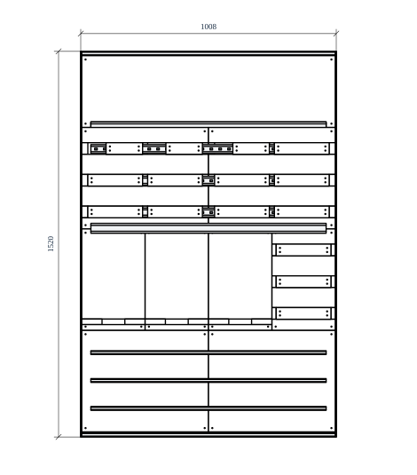
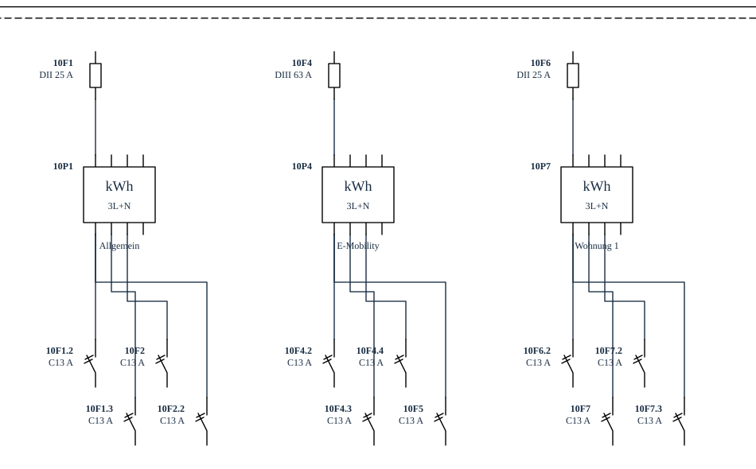

AUFTRÄGE
Bestätigen. Organisieren. Loslegen.
Übernimm die genehmigte Offerte, lade die Auftragsbestätigung herunter und verfolge, welches Kundenmaterial noch fehlt.
DEINE BASIS IM SCHALTANLAGENBAU
Von der Offerte zum Auftrag. Vom Schema in die Werkstatt. SchaltBase verbindet eure Planung mit dem Material: Auftrag erstellen – vorhandene Lagerartikel werden automatisch abgebucht.
OFFERTE · AUFTRAG · LAGER
Beim Erstellen des Auftrags automatisch abgebucht.
LAGER / ABGEBUCHTE AUFTRÄGE
VOM ANGEBOT BIS ZUM MATERIAL
Kundendaten, Positionen und Mengen bleiben verbunden. So wird aus einer Zusage ein Auftrag, mit dem Büro und Werkstatt weiterarbeiten können.
AUFTRÄGE
Übernimm die genehmigte Offerte, lade die Auftragsbestätigung herunter und verfolge, welches Kundenmaterial noch fehlt.
LAGER
Schon beim Offerieren die Verfügbarkeit sehen. Beim Erstellen des Auftrags wird das vorhandene Material automatisch vom Bestand abgezogen.
Der richtige Moment zählt: Die Offerte zeigt den aktuellen Bestand. Erst «Auftrag erstellen» löst die Abbuchung aus. Fehlmengen bleiben sichtbar; die ursprüngliche Offerte bleibt erhalten.
SCHAU DEINEN WERKZEUGEN BEI DER ARBEIT ZU
Ein Musterprojekt, verständliche Schritte. Die Clips starten automatisch. Wähle ein Werkzeug, pausiere den Ablauf oder springe direkt zum gewünschten Schritt.
OFFERTE AN-00104 · MUSTER AG
AUFTRAG AU-00028
LAGER / ABGEBUCHTE AUFTRÄGE
AUFTRAG / ANGELIEFERTES MATERIAL
AUFTRAG / ANGELIEFERTES MATERIAL
Alle vorgesehenen Kundenpositionen sind eingetroffen.
LAGER / ARTIKELBESTAND
SBR & AUFBAU DYNAMISCH
Schienen aus der Offerte direkt übernehmen.
LAGER / ZUSCHNITT ZUM AUFTRAG
Stange 1 · drei Zuschnitte
Stange 2 · ein Zuschnitt
LAGER / ABGEBUCHTE AUFTRÄGE
 Makros platziert · Kennzeichen zugeordnet
Makros platziert · Kennzeichen zugeordnet
 Rahmen und Schienen
Rahmen und Schienen

Platten & Schienen anordnen Geräte einsetzen · Aufbau prüfen
Geräte einsetzen · Aufbau prüfen

Geräte und Stromkreise erfassen
Disposition
| Position | Menge | CHF |
|---|---|---|
| Schrank | 1 | 680.00 |
| Leitungsschutzschalter | 12 | 264.00 |
| Montage · CHF 95/h | 6 h | 570.00 |
Berechtigte Mitarbeitende können gemeinsam weiterarbeiten.
AUFTRÄGE
Die genehmigte Offerte wird zum Auftrag mit eigener Nummer und Auftragsbestätigung. Gleichzeitig wird vorhandenes, zugeordnetes Material aus eurem Lager abgebucht.
Aufträge im Detail kennenlernenAnimierte Produktbeispiele mit fiktiven Artikeln, Musterpreisen und Zeichnungen aus dem CAD-Werkzeug. Keine Kundenprojekte. Schnittbreite und Artikelzuordnung werden im eigenen Betrieb hinterlegt.
WISSEN GRIFFBEREIT. ARBEIT IM FLUSS.
Berechnen, nachschlagen und dokumentieren. Die Helfer für deinen Arbeitsalltag – mit gemeinsamen Vorlagen für deinen Betrieb.
| Schiene | Abzug | Länge |
|---|---|---|
| DIN | 15 mm | 785 mm |
| Galip | 30 mm | 770 mm |
| Eigene Schiene | Abzug | Länge |
|---|---|---|
| Profil A | 65 mm | 735 mm |
| Profil B | 30 mm | 770 mm |
Eigene Schienen und Abzüge je Tiefe.
Schienenrechner
Je Verteilungstiefe die passenden Schienen mit euren Abzügen. Stückzahlen ergänzen, Liste drucken oder als CSV exportieren.
Funktionen entdeckenEW-Vorschriften
EW auswählen, hinterlegte PDFs öffnen und firmeneigene Unterlagen ergänzen. Alles an einem Ort für die Werkstatt.
Funktionen entdeckenEigene Unterlagen ergänzen und im Betrieb teilen.
Aufbauabstände
Technische Zeichnungen und Aufbauabstände nachschlagen. Eigene Zeichnungen im Betrieb zur Verfügung stellen.
Funktionen entdecken| Anwendung | Leiterfarbe |
|---|---|
| Steuerung | Firmeneintrag |
| Versorgung | Firmeneintrag |
| Signalisierung | Firmeneintrag |
Mitarbeitende sehen die Farben und Angaben ihrer Firma.
Drahtfarben
Anwendungen, Querschnitte und Leiterfarben übersichtlich nachschlagen. Firmenvorgaben zentral anpassen.
Funktionen entdeckenTechnische Tabellen
Strombelastbarkeit für Litzen und Kupferschienen sowie Schienenlängen und Platzeinheiten für ABB Smissline.
LAGER / ARTIKELBESTAND
LAGER / ABGEBUCHTE AUFTRÄGE
Lagerverwaltung
Geräte, Platten und Schienen verwalten. Mit optionalen Lagerplätzen, nachvollziehbaren Auftragsbuchungen und Reststücken aus dem Zuschnitt.
Funktionen entdeckenTechnische Tabellen und Beispieldarstellungen unterstützen die Arbeit. Die aktuellen Vorschriften, Herstellerangaben und die fachgerechte Auslegung bleiben massgebend.
DEINE FIRMA. DEINE ABLÄUFE.
Euer Wissen bleibt im Team. Mitarbeitende mit dem passenden Schreibrecht pflegen eigene Schienenregeln, Farben und Unterlagen. Mitarbeitende greifen mit ihrem persönlichen Konto darauf zu.
JEDES WERKZEUG IM DETAIL
VON DER PLANUNG BIS IN DIE WERKSTATT
Der Arbeitsplatz ist nur mit einem freigeschalteten Benutzerkonto zugänglich.